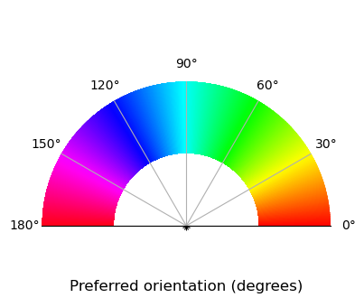

import pandas as pd
import numpy as np
from caveclient import CAVEclient
import cloudvolume
import pyvista as pv
import matplotlib as mpl
import matplotlib.pyplot as pltLabel preferred-orientation of synaptic inputs
This example uses the plotting package PyVista for interactive rendering. Any rendering program that takes vertices and edges can work.
Query the functional properties of coregistered cells
# Set version to the most recent major version with a flat segmentation
client = CAVEclient("minnie65_public")
client.version = 1300
# Query functional properties, keep value with highest cc_abs
functional_df = client.materialize.tables.functional_properties_v3_bcm().query(
select_columns = {'nucleus_detection_v0': ['id', 'pt_root_id'],
'functional_properties_v3_bcm': ['pref_dir','pref_ori','cc_abs'],
},
)
print(len(functional_df))12094This table includes duplicates on pt_root_id because some cells were recorded in more than one session. For this analysis, we will keep the derived properties from the recording with the highest quality, denoted under cc_abs
# Keep the row with highest cc_abs
functional_df = (functional_df
.sort_values('cc_abs', ascending=False)
.drop_duplicates(subset='id', keep='first')
.reset_index(drop=True)
)
print(len(functional_df))10631Select an example functional cell
root_id = 864691135655627458
# query the input synapses
syn_df = client.materialize.synapse_query(post_ids=root_id)[['id','pre_pt_root_id','post_pt_root_id','ctr_pt_position']]
syn_df.head()| id | pre_pt_root_id | post_pt_root_id | ctr_pt_position | |
|---|---|---|---|---|
| 0 | 174174984 | 864691135392563698 | 864691135655627458 | [186856, 191906, 22934] |
| 1 | 162422539 | 864691135448388082 | 864691135655627458 | [178626, 205198, 22722] |
| 2 | 173960580 | 864691135615882692 | 864691135655627458 | [185226, 196182, 22506] |
| 3 | 189711855 | 864691136911120750 | 864691135655627458 | [195675, 191580, 20316] |
| 4 | 142643510 | 864691134753572256 | 864691135655627458 | [170124, 106842, 19907] |
Merge the functional properties to the synapse table
# Combine functional measure to synapse table (preferred orientation)
coreg_syn_ori = (syn_df.merge(functional_df[['pt_root_id', 'pref_ori']],
left_on='pre_pt_root_id',
right_on='pt_root_id',
how='left')
.drop(columns={'pt_root_id'})
)
coreg_syn_ori = (coreg_syn_ori.merge(functional_df[['pt_root_id', 'pref_ori']],
left_on='post_pt_root_id',
right_on='pt_root_id',
how='left',
suffixes=['_pre','_post'])
.drop(columns={'pt_root_id'})
)
# Drop the synaptic partners without an orientation preference (non coregistered cells)
coreg_syn_ori = coreg_syn_ori.dropna(subset=['pref_ori_pre','pref_ori_post'])
coreg_syn_ori.tail()| id | pre_pt_root_id | post_pt_root_id | ctr_pt_position | pref_ori_pre | pref_ori_post | |
|---|---|---|---|---|---|---|
| 8961 | 159745553 | 864691135539486066 | 864691135655627458 | [178414, 121410, 21070] | 2.646102 | 2.573279 |
| 9001 | 158198769 | 864691135519025802 | 864691135655627458 | [175653, 124157, 20593] | 0.102209 | 2.573279 |
| 9006 | 160833418 | 864691135293488822 | 864691135655627458 | [178344, 125064, 21023] | 1.344499 | 2.573279 |
| 9043 | 165737524 | 864691135993150913 | 864691135655627458 | [179838, 104038, 20625] | 1.417019 | 2.573279 |
| 9077 | 158328537 | 864691134990217850 | 864691135655627458 | [178680, 203290, 22572] | 2.914949 | 2.573279 |
Load the static mesh for one cell
# Set the static segmentaiton source to the most recent flat segmentation where that root id is valid
seg_source = 'precomputed://gs://iarpa_microns/minnie/minnie65/seg_m1300'
# load from cloudvolume
cv = cloudvolume.CloudVolume(seg_source, progress=False, use_https=True)
mesh = cv.mesh.get(root_id, lod=2)[root_id]# Render the mesh vertices for pyvista
vertices = mesh.vertices
faces = mesh.faces
# add a column of all 3s to the faces
padded_faces = np.concatenate([np.full((faces.shape[0], 1), 3), faces], axis=1)
mesh_poly = pv.PolyData(vertices, faces=padded_faces)
# Flip with y axis
mesh_poly.points[:, 1] *= -1set the color map for orientation
fig = plt.figure(figsize=[4,4])
quant_steps = 2056
colormap = plt.get_cmap('hsv', quant_steps)
norm = mpl.colors.Normalize(0.0, np.pi)
display_axes = fig.add_axes([0.1,0.1,0.8,0.8], projection='polar')
norm = mpl.colors.Normalize(0.0, np.pi)
# # Plot the colorbar onto the polar axis
cb = mpl.colorbar.ColorbarBase(display_axes, cmap=colormap,
norm=norm,
orientation='horizontal')
# use orientation horizontal so that the gradient goes around the wheel rather than centre out
# aesthetics - get rid of border and axis labels
cb.outline.set_visible(False)
display_axes.set_rlim([-1,1])
display_axes.set_title('Preferred orientation (degrees)', y=0, loc='center')
plt.show() 
Format the synapse positions
# format the synapse positions
presyn_positions = np.vstack(coreg_syn_ori.ctr_pt_position.to_numpy()).astype(float)
presyn_positions = presyn_positions*np.tile([4,4,40],[len(presyn_positions),1])
pre_syn_poly = pv.PolyData(presyn_positions)
# Flip with y axis
pre_syn_poly.points[:, 1] *= -1
pre_syn_colors = colormap(coreg_syn_ori.pref_ori_pre)
post_syn_color = colormap(coreg_syn_ori.pref_ori_post)[0]Initialize plotting object, add mesh and annotations
pv.set_jupyter_backend("client")
plotter = pv.Plotter(image_scale=10)
plotter.add_mesh(mesh_poly, color=post_syn_color, opacity=0.3)
plotter.add_mesh(pre_syn_poly, scalars=pre_syn_colors, rgb=True, point_size=10)
plotter.camera_position = 'zy'
plotter.set_background('#fbfbfb')
plotter.show()